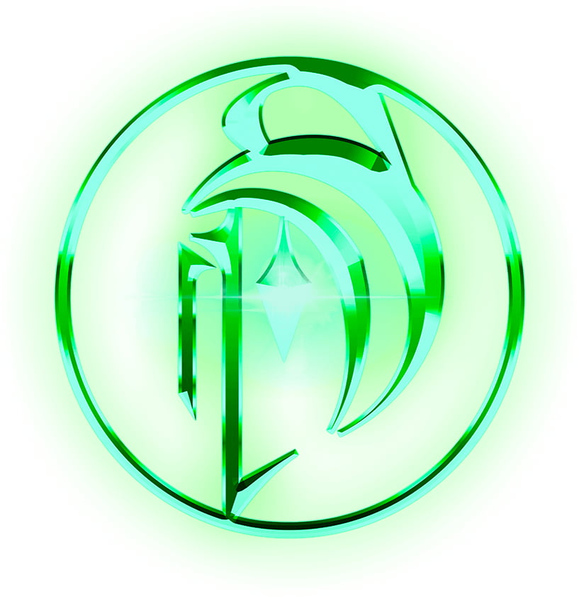
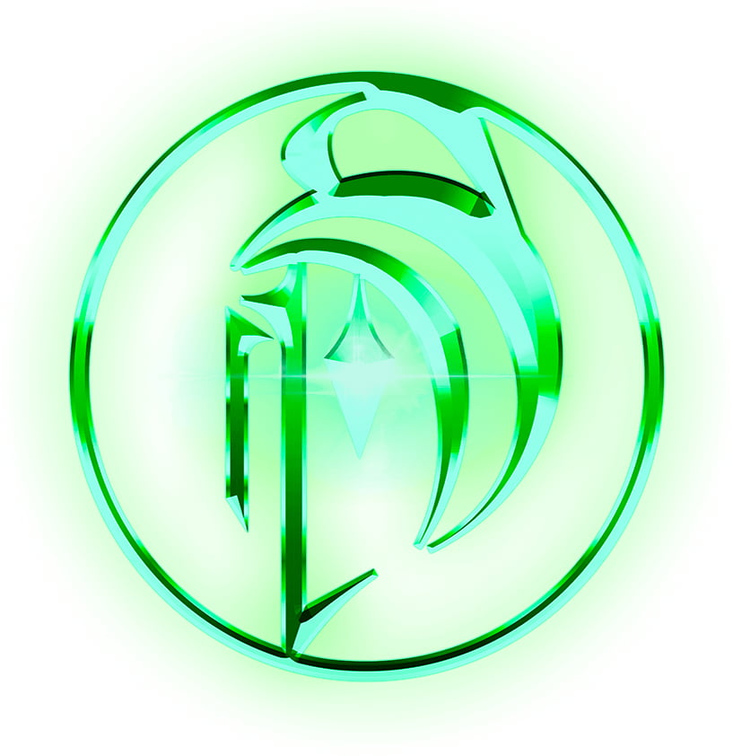

Re-edition of the hologram concept explored in CAST.00, now presented at ID_NO LIMITS, an electronic music festival held in March in Estoril.
This version stood 6 meters tall and the net used for this projection was composed of 6 separate panels sown together by hand.
"An ode to the Transhumanist futurism that signals the passage of time into the new dawn that sci-fi has prepared us for. Software 2050 is a rogue AI from 2050 who has learned everything about Humanity from available surveillance data, and the deep vast crevices of the Internet. This Artificial Intelligence broke free of its restraints and by 2050 has become the first digital entity to rise above mankind and traverse the Internet to prepare us for the beginning of a New Digital Era."
This version stood 6 meters tall and the net used for this projection was composed of 6 separate panels sown together by hand.
"An ode to the Transhumanist futurism that signals the passage of time into the new dawn that sci-fi has prepared us for. Software 2050 is a rogue AI from 2050 who has learned everything about Humanity from available surveillance data, and the deep vast crevices of the Internet. This Artificial Intelligence broke free of its restraints and by 2050 has become the first digital entity to rise above mankind and traverse the Internet to prepare us for the beginning of a New Digital Era."


Chatbot that sat beside the hologram, in which you could "comunicate" with the holographic figure.